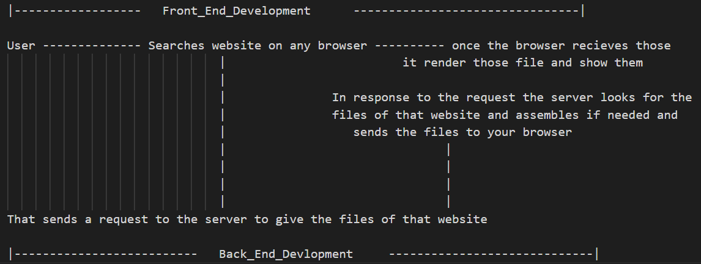

Terminology
-
IP Address
An IP address is a number used to address each device on an IP( Internet Protocol ) network uniquely. -
Domain name
They provide a human-readable address for any web server available on the Internet. Computers can handle such addresses(192.0.0.1 , IP Address) easily, but people have a hard time finding out who is running the server or what service the website offers. IP addresses are hard to remember and might change over time. To solve all those problems we use human-readable addresses called domain names. A domain name has a simple structure made of several parts (it might be one part only, two, three… like example.org), separated by dots and each of those parts provides specific information about the whole domain name. -
Web Address
All web pages can each be found at a unique location called web address, also called a URL (like https://www.abc.com). To access a page, just type its address in your browser address bar.Your browser displays URLs in its address bar, for example:https://developer.mozilla.org. Some browsers display only the part of a URL after the "//", that is, the Domain name. URLs can also be used for file transfer (FTP), emails (SMTP), and other applications. -
Search Engine
A web service that helps you find other web pages. Search engines are normally accessed through a web browser's address bar. -
Web Service
A software that responds to requests over the Internet to perform a function or provide data. A web service is typically backed by a web server, and may provide web pages for users to interact with. Many websites are also web services, though some websites (such as this one) consist of static content only. -
Web Server
A server is a computer or software system that provides resources, data, or services to other computers, called clients (can say, users web browser), over a network. A computer that hosts a website on the Internet. -
Web browser
A web browser or browser is a program that retrieves and displays websites, and lets users access additional webpages through links. -
Website
A collection of web pages grouped together into a single resource, with links connecting them together. Often called a "site". -
Web pages
A document that can be displayed in a web browser. These are also often called just "pages". Such documents are written in the HTML language.A web page can embed a variety of different types of resources such as:
- Style information — controlling a page's look-and-feel.
- Scripts — which add interactivity to the page.
- Media — images, videos, audios, PDFs, SVGs and other files.
How the Web Works

after entering in browser and clicking enter to get the website is called rendering
Types of Web Development
Front-End Web Development
- It is the development that is visible to user. Here the work is to decide what would the website content, how it looks, what happens on user's actions.
Back-End Web Development
- It is development that is done on the server side and it is not visible to the user
Types of Website
Static Website
- These websites are in which the files of the it are just kept on server and are just sent on your device's browser
Dynamic Website
- These websites are in which the files of the it are just kept on server and are just any assembles on server-side before sending to the device's browser